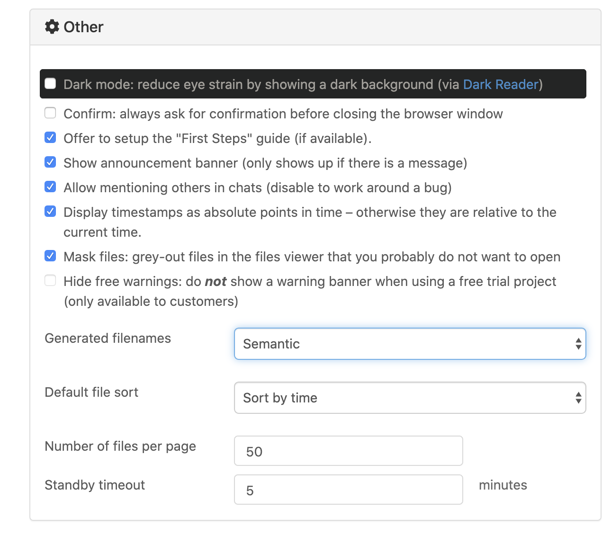
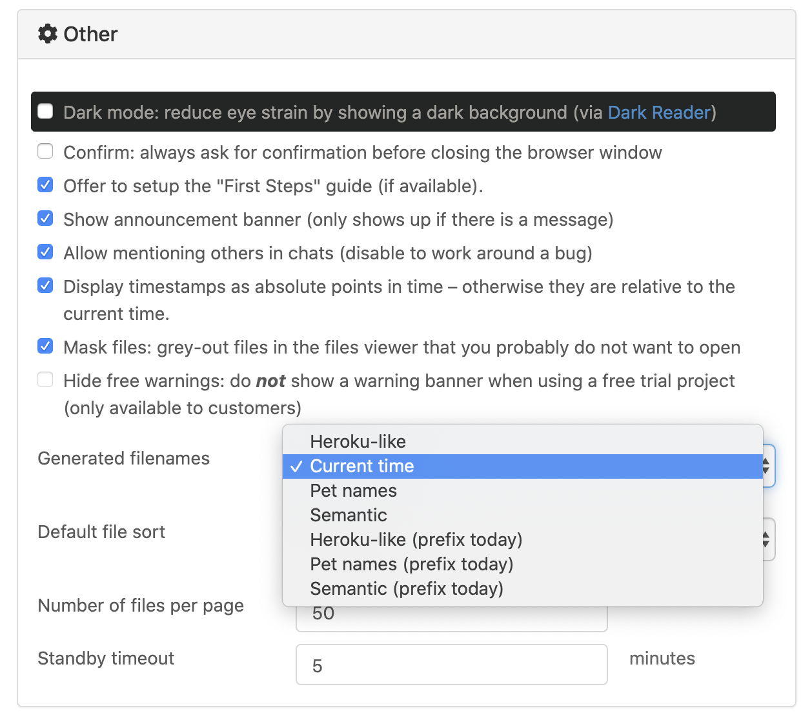

Account Tab¶
The Account Tab is where you manage settings, subscriptions, and resources across your projects. There are 6 dialog pages under Account Tab.
Under “Account” you will find a button to Sign out at upper right, and the following sections for managing your account.
Preferences¶
Account settings¶
Most of the entries under Account settings are self-explanatory. Here are a few additional notes.
- Your password is needed to change your email address.
- Your password is needed to create or change the API key for your account. See CoCalc API documentation to learn about the API.
- The Newsletter checkbox doesn’t do anything yet. We don’t send out a newsletter.
- Sign Out of CoCalc using one of the “Sign Out” buttons. You will be asked to confirm your selection.
- Choosing the red
Delete Account...button will cause a warning window to pop up. Confirmation is required before proceeding.
warning displayed when “Delete Account…” is clicked
- Use one or more of the options under
Linked accountsif you want to sign in with Facebook, GitHub, Google, or Twitter. You can also unlink online accounts from CoCalc in this section. To sign in with a linked account, choose the icon for Facebook, GitHub, Google, or Twitter under the blanks for Email address & Password at upper right in the sign-in screen.
Other settings¶
Dark mode: CoCalc allows you to specify dark mode for all windows in “Other settings”. See the News update on dark mode for more information.
Confirm
Show
Allow
Display
Mask
Hide
- Generated filenames
- 
Default file sort
Number of files per page
- Standby timeout
If you are not active for several minutes, you may see the gray and blue CoCalc splash screen. Moving the mouse over the window or typing or clicking in the window will remove the splash screen. The time until the splash screen appears is the standby timeout. We use it to conserve resources, mainly network bandwidth and browser CPU cycles. Execution of your code on the server is not paused. You can alter the standby timeout under Account / Preferences / Other / Standby timeout, as shown above under Other settings.
Note
After a longer interval of inactivity, your project will be stopped. Increasing this setting requires a project upgrade. See: What is an “idle timeout?”.
Profile¶
Editor settings¶
editor settings (upper part)
editor settings (lower part)
Most options under “Editor settings” are self-explanatory. Here are additional details.
- Enable
Jupyter classicif you have a specific requirement for a Jupyter feature that isn’t available under CoCalc Jupyter. With this box checked, the default for opening .ipynb files in the CoCalc interface will be Classic jupyter. See warnings regarding Classical versus CoCalc notebooks before enabling this feature.
Terminal settings¶
Subscriptions and Course Packages¶
order form displays if no subscriptions are active
active subscriptions, if present, are displayed
Payment methods¶
This is where you can enter credit card information for the CoCalc account. Credit card details (full credit card number, expiration date, CVV number) are maintained by our payment provider and are not stored on CoCalc servers or visible to the CoCalc support team.
Subscriptions and course packages¶
This section lists your currently active subscriptions. The word “Active” denotes ordinary active subscriptions. The word “Trialing” indicates a free trial or other custom subscription plan.
list of active subscriptions
Note that you can “stack” multiple course plans to combine the resources. In the example above, a Small Course (25 students) and a Medium Course (70 students) are combined to provide for a class of 95 students.
Personal subscriptions renew automatically. Course plans do not renew automatically.
To cancel a subscription, find the subscription in the active subscription list and click Cancel at the far right.
The subscription will not be auto-renewed at the next renewal date and the expiration date will be displayed in the subscription list.
dialog shown after clicking “Cancel” in the previous example
Upgrades¶
All upgrades¶
Upgrades that you get from your subscriptions and course packages
Applied upgrades¶
Upgrades you have applied to projects
Licenses¶
Under “Licenses”, you can keep track of CoCalc licenses you manage or use in your projects.
Licenses that you manage¶
If you are a manager for one or more CoCalc licenses, you will see those licenses listed in this section. To have license managers added or removed, contact CoCalc support at help@cocalc.com. License managers must have a CoCalc account with an email address.
Projects with licenses¶
If you are an owner or collaborator on any projects that are CoCalc licenses, those projects are listed in this section.
SSH keys¶
This section assumes you have created an SSH key pair as described in SSH Keys.
Click the gear icon next to your name at upper right to open Account Settings. Choose the tab “SSH Keys” and note the form for adding a key at right. Enter a title for the key in the Title field. Specify a title that is meaningful to you for the key pair you are using, for example John’s CoCalc Key. Copy the public key into the Key field. To do this, open the file for your public key on your local computer. For example, if you are using macOS or Ubuntu, you could open a terminal and type something like the following, depending on the name of your public key file. cat ~/.ssh/id_ed25519.pub Use your mouse to highlight the contents of the key file, then copy and paste it into the Key area. saving the entry.
Click Add SSH Key. Your key is now saved for that account and will work for all projects for which that account has owner or collaborator status. As with the previous section, the user@hostname string needed for the ssh command consists of the project id with hyphens removed for the user, and ‘ssh.cocalc.com’ for the hostname, and can be found just below the caption Use the following username@host: in the ‘SSH Keys’ section of project status tab.
SSH keys¶
SSH keys
Add an SSH key¶
Support¶
Support tickets¶
View your open and closed CoCalc support requests here. A red background indicates an open ticket, while a blue background indicates a closed ticket.
Note
If you email CoCalc support from an email address other than what is on your account, the help ticket that is created won’t be listed here. A good rule when you have a question is to have the file relating to your question open in CoCalc, then click the Help button to request support. That way, the ticket will be listed here, and CoCalc staff will see a link to the file in question.

{kind=link}
{kind=link}
{kind=link}
{kind=link}
{kind=link}
{kind=link}
{kind=link}
{kind=link}
{kind=link}
{kind=link}
{kind=link}
{kind=link}
{kind=link}
{kind=link}
{kind=link}
{kind=link}